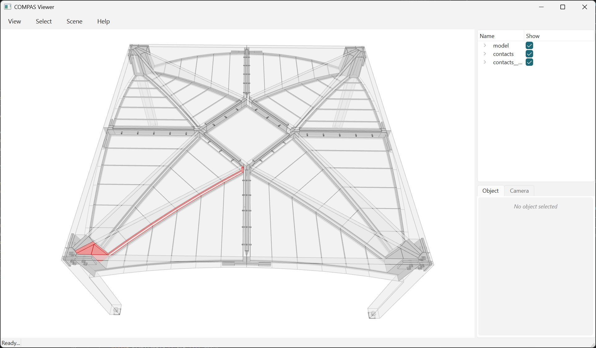

Read the Breps with their adjacency¤
The page before draws the STEP files. This one asks them what is connected to what, which needs the third file: the JSON sidecar.

The 17 contacts on inner_ribs_0_0 in red, the rest ghosted behind them. The
sidecar is what turns "face 412" into "this rib meets that bed".
import json
import pathlib
from collections import defaultdict
from compas.colors import Color
from compas.tolerance import TOL
from compas_occt.brep import OCCBrep
from compas_viewer import Viewer
from compas_tf.viewer import zoom_to
data_dir = pathlib.Path(__file__).parent.parent / "data"
STEP_FILE = data_dir / "cantilevers_baked_model.stp"
CONTACTS_STEP_FILE = data_dir / "cantilevers_baked_contacts.stp"
CONTACTS_JSON_FILE = data_dir / "cantilevers_baked_contacts.json"
# The 0.001 default is 1 micron on a building: 2.93M triangles against 19.8k.
TOL.lineardeflection = 1.0
solids = OCCBrep.from_step(STEP_FILE).solids
faces = OCCBrep.from_step(CONTACTS_STEP_FILE).faces
records = json.loads(CONTACTS_JSON_FILE.read_text())["contacts"]
# STEP drops names but keeps ORDER, so record i describes face i. Equal counts is
# the only check there is that the two files came from the same run.
if len(records) != len(faces):
raise SystemExit(f"{len(faces)} faces against {len(records)} records: the STEP and its sidecar are out of sync.")
print(f"{len(solids)} solids, {len(faces)} contact faces, {len(records)} adjacency records")
# A graph over element NAMES: the solids themselves stay anonymous. For geometry
# with a name on it, read the JSON model instead (example_model_19).
neighbours = defaultdict(set)
joints = defaultdict(list) # (a, b) -> the face indices they share
for record in records:
neighbours[record["a"]].add(record["b"])
neighbours[record["b"]].add(record["a"])
joints[record["a"], record["b"]].append(record["index"])
area = sum(record["area"] for record in records)
print(f"{len(neighbours)} elements over {len(joints)} pairs, {area / 1e6:.2f} m2 of interface")
# Several faces on one pair is one joint the boolean left in pieces, so group by
# pair before ranking or it sorts below a single big face.
print("\nbiggest joints:")
for (a, b), indices in sorted(joints.items(), key=lambda kv: -sum(records[i]["area"] for i in kv[1]))[:5]:
print(f" {sum(records[i]['area'] for i in indices) / 1e6:6.3f} m2 {a} - {b} ({len(indices)} faces)")
by_type = defaultdict(float)
for record in records:
by_type[tuple(sorted((record["a_type"], record["b_type"])))] += record["area"]
print("\nby type:")
for (a, b), value in sorted(by_type.items(), key=lambda kv: -kv[1]):
print(f" {value / 1e6:6.3f} m2 {a} - {b}")
# One element's joints out of the 733, drawn over a transparent model - every
# contact sits BETWEEN two solids.
focus = max(neighbours, key=lambda n: len(neighbours[n]))
selected = {record["index"] for record in records if focus in (record["a"], record["b"])}
print(f"\n{len(selected)} contacts on {focus}, the most connected element")
viewer = Viewer()
parts = viewer.scene.add_group("model")
for solid in solids:
viewer.scene.add(solid, parent=parts, opacity=0.3)
group = viewer.scene.add_group("contacts")
highlighted = viewer.scene.add_group(f"contacts__{focus}")
for record, face in zip(records, faces):
hit = record["index"] in selected
viewer.scene.add(
face.to_polygon(),
# The name STEP could not carry, put back from the sidecar.
name=f"contact_{record['index']}__{record['a']}__{record['b']}",
parent=highlighted if hit else group,
facecolor=Color(1, 0, 0) if hit else Color(0.6, 0.6, 0.6),
linecolor=Color(1, 0, 0) if hit else Color(0.4, 0.4, 0.4),
show_points=False,
)
# The camera's far plane is 1000 mm, so without this the building starts clipped.
zoom_to(viewer, [solid.aabb for solid in solids])
viewer.show()
237 solids, 733 contact faces, 733 adjacency records
169 elements over 585 pairs, 20.92 m2 of interface
biggest joints:
0.344 m2 inner_beams_0_1 - connector_wedge_3 (3 faces)
0.344 m2 inner_beams_2_2 - connector_wedge_3 (3 faces)
0.344 m2 inner_beams_0_0 - connector_wedge_0 (3 faces)
0.344 m2 inner_beams_2_1 - connector_wedge_0 (3 faces)
0.344 m2 inner_beams_0_2 - connector_wedge_5 (3 faces)
by type:
12.818 m2 PlateElement - PlateElement
4.459 m2 ConnectorWedgeElement - PlateElement
1.106 m2 ColumnElement - PlateElement
1.101 m2 ConnectorElement - PlateElement
0.895 m2 ColumnElement - ConnectorElement
0.541 m2 OuterRibConnectorElement - PlateElement
17 contacts on inner_ribs_0_0, the most connected element
A record per face, in the same order the faces were written:
{"index": 0, "a": "beds_0_0_0", "b": "wedges_inner_beams_0_0",
"a_type": "PlateElement", "b_type": "PlateElement",
"a_guid": "c46c8acc-...", "b_guid": "3098146e-...",
"area": 39851.67}
Three things worth knowing:
Index is the only join. Equal counts is the one check that the two files came from the same run - pair a STEP with the wrong sidecar and every name lands on the wrong face, silently.
The names are element names. The solids stay anonymous; nothing here says
which of the 237 is beds_0_0_0. For that, read the JSON model.
A pair is not a face. 585 pairs carry 733 faces, so group by (a, b) before
ranking or one joint split in three sorts below a single big one.